LEGO Sweeping Bot
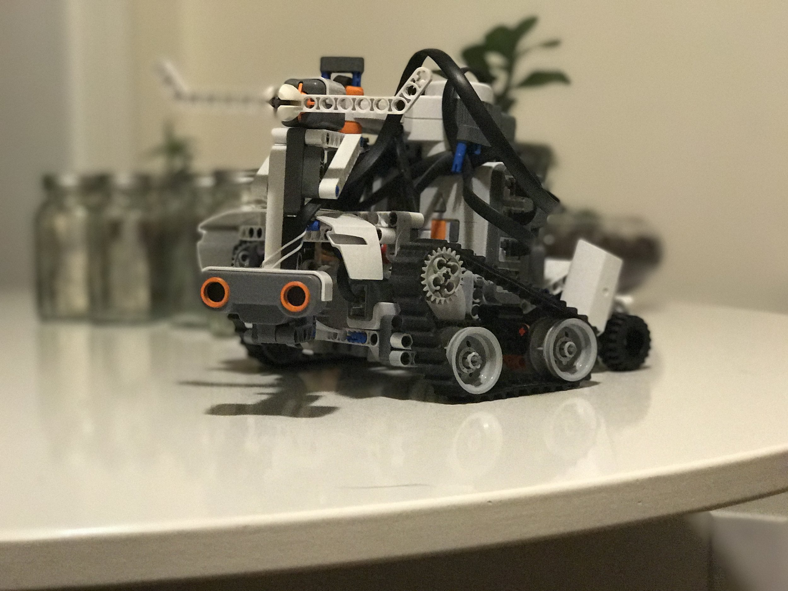I recently acquired a LEGO Mindstorms NXT 2 via work. The first night we had it, Emma and I built the robot from the booklet, loaded up the basic program provided, and made it drive around for a minute shooting little balls. Then, because it’s LEGO, I took it apart and began work on my own robot.
Initially, I wanted to replicate the Roomba’s basic self-driving functionality: driving in a crooked line until colliding with something, then avoiding that object and continuing on its way. This was pretty easy and I got a basic version working the first night. That’s not to say it worked all that well. It featured a stationary distance sensor tucked into the front, and it simply couldn’t detect enough objects.
On the second evening, I added a pivoting arm to the front and moved the distance sensor there. This enabled it to sweep back and forth quickly, dramatically improving its ability to avoid. It still got stuck under a lot of furniture that was above its view — an impact sensor on the upper portion of the arm solved this.
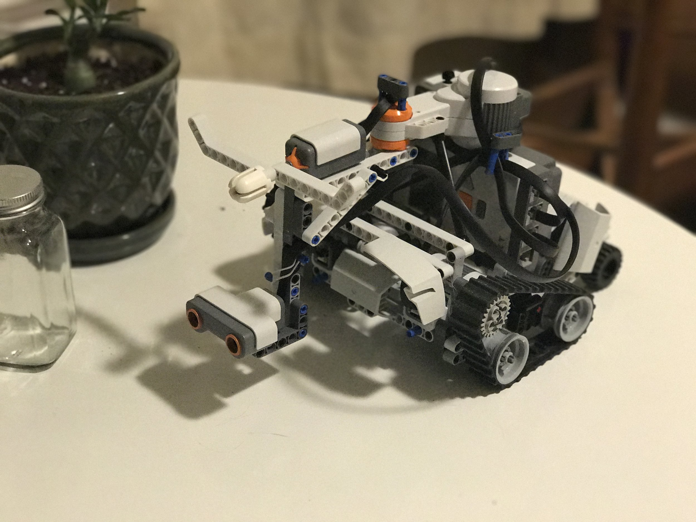
At this point, it was a decent self-propelled, semi-autonomous driver. Not a good one, but a decent one. I figured as long as it was driving around, it might as well sweep. I wrapped some paper towel and felt around a few gears, plugged it into the rear right-side motor, and built a tray behind the robot to catch dirt.
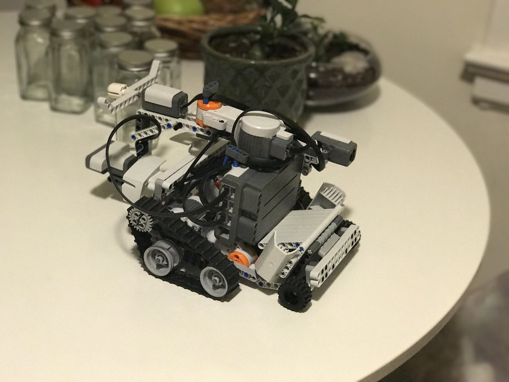
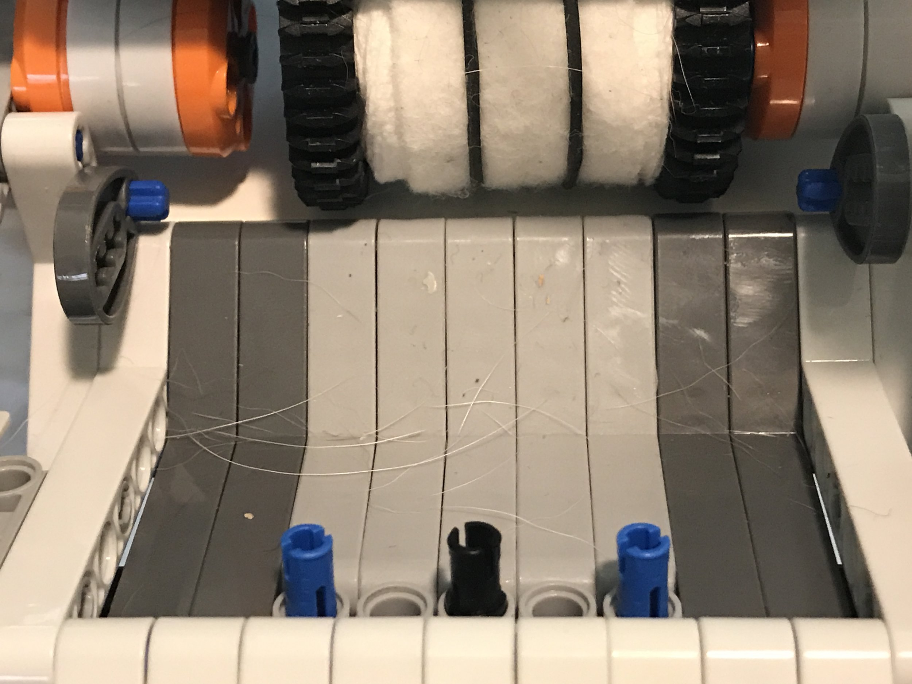
With that said, after driving around a while, it did pick up a bit of dirt and dog hair. It’s not efficient, but it does technically work.
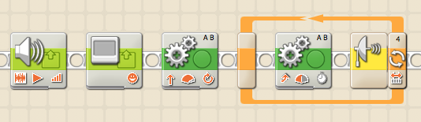
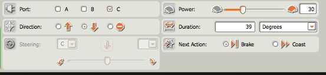
This was only possible because LEGO built an incredible product that packs the power of a small development board, like an Arduino, into something anyone could use. Software for the NXT 2 feels like a relic of when it was initially offered, circa 2006, but it was clearly a well developed product at that point. It’s easy to drop their action blocks onto the timeline and assemble some pretty powerful programs. The ability to select a few blocks from your entire program, then click one button and have them run on your NXT is something from which the Arduino could learn a trick or two. The software looks similar to a Scratch environment, but it definitely has its own take on the paradigm and is branded phenomally well.
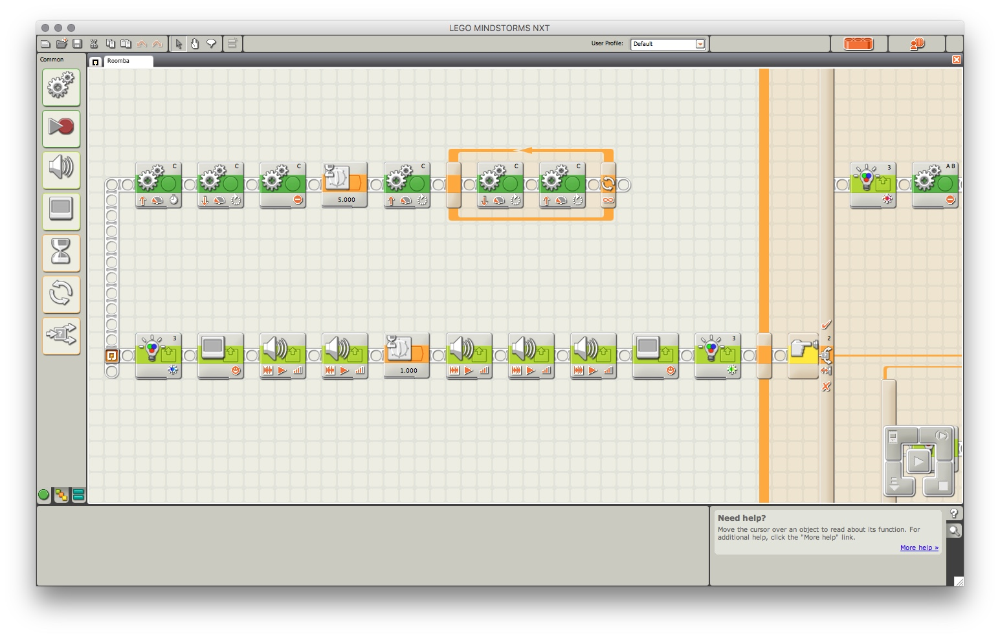
The NXT 3 looks like a really solid update, and I might have grab that. Can’t wait to see what LEGO has in store for the next update.
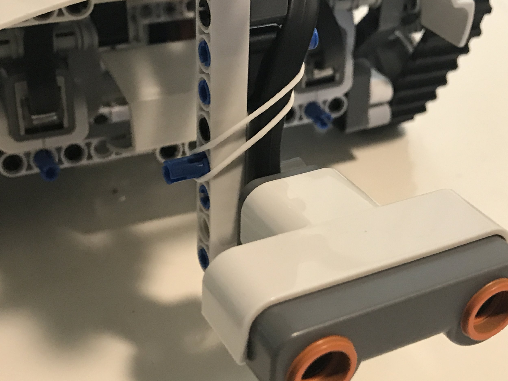
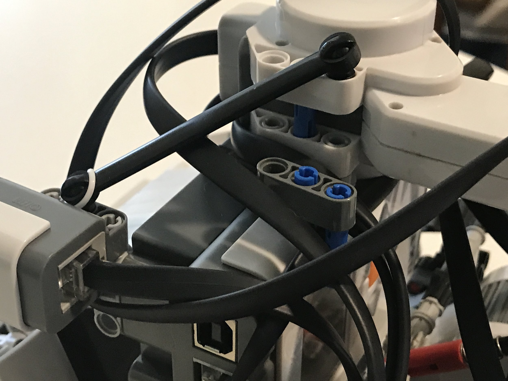
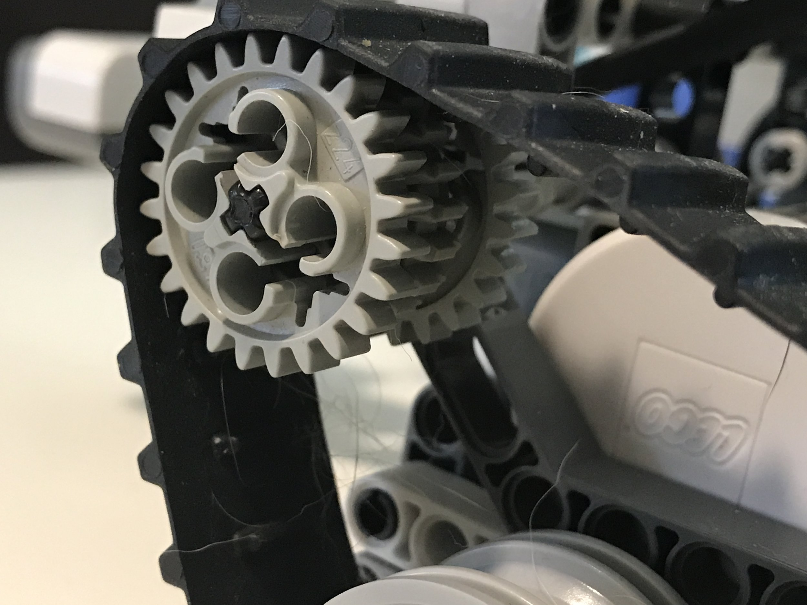
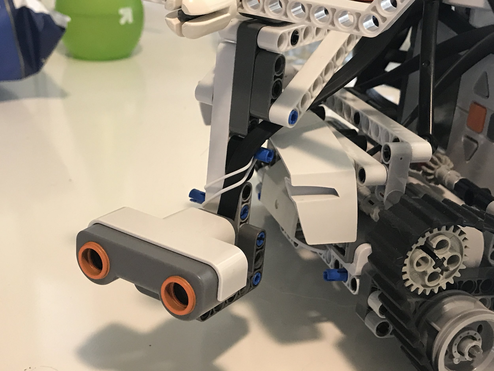
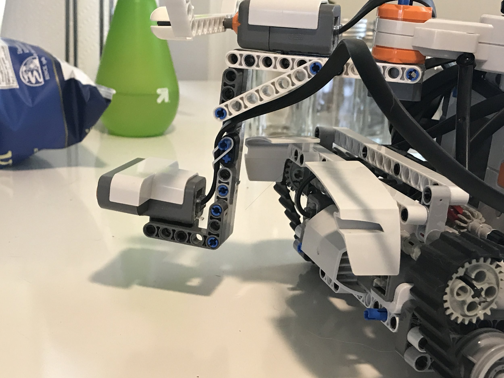
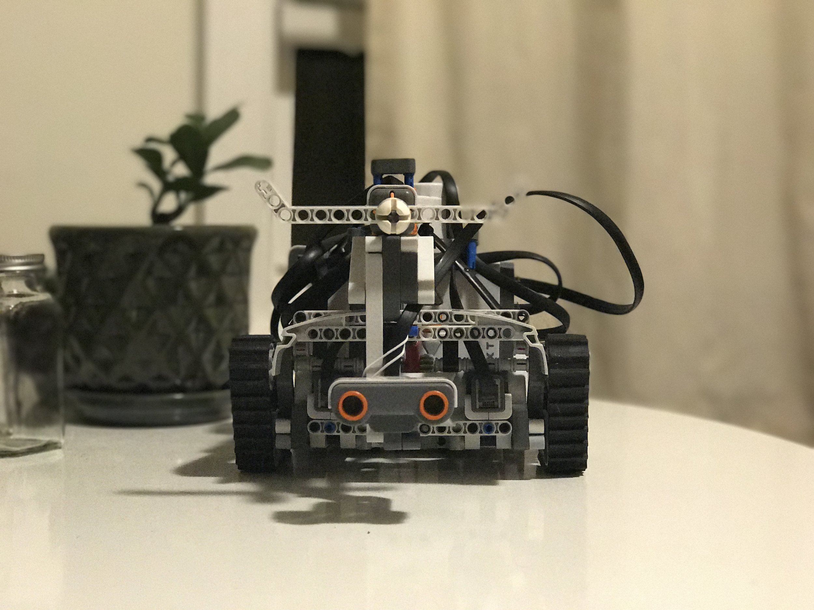
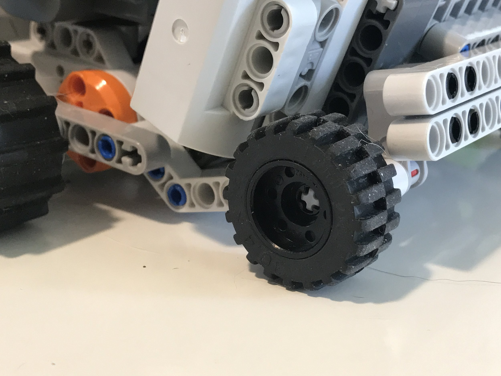
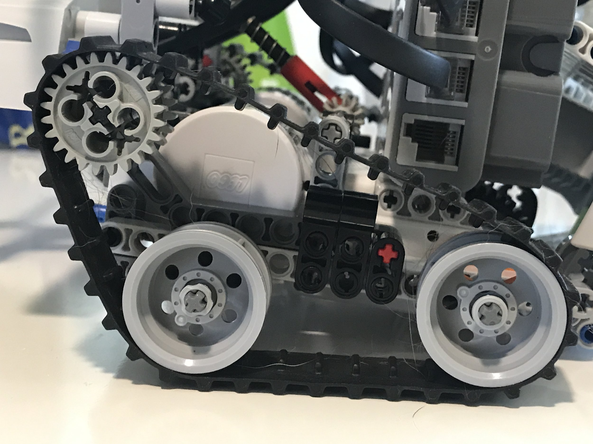